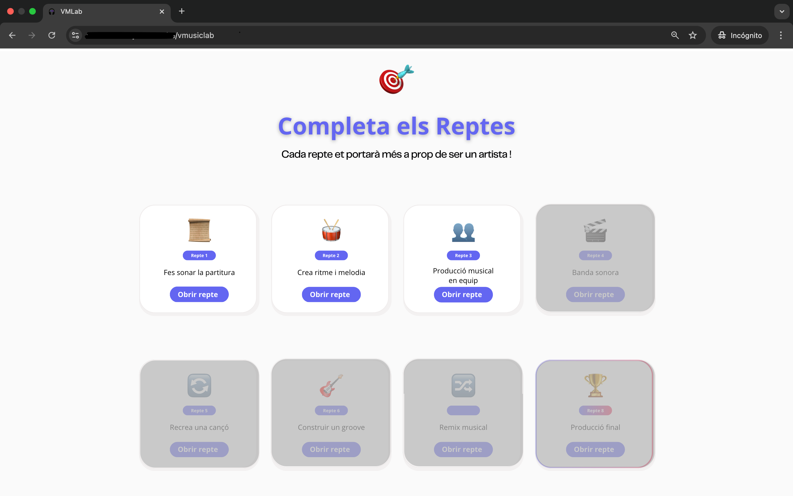
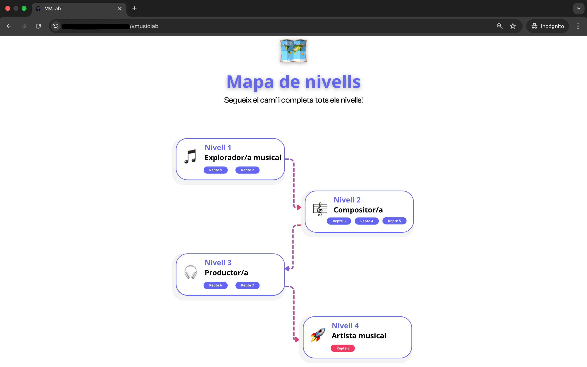
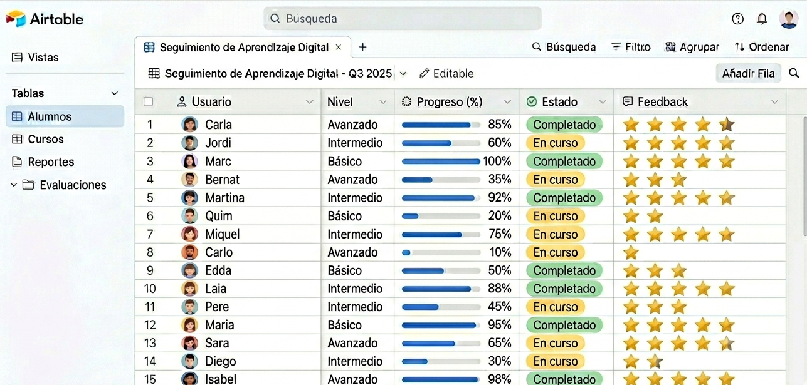

Pedagogía, tecnología y estructura de producto para transformar contenidos densos en aprendizaje real y autónomo.
A lo largo de mi trayectoria he diseñado experiencias de aprendizaje digital, desarrollado contenidos eLearning y trabajado con plataformas LMS en diversos contextos educativos.
Mi enfoque combina el diseño pedagógico con la tecnología educativa, manteniendo siempre una mirada de mejora continua basada en el feedback de los usuarios.
Actualmente me interesa especialmente explorar cómo tecnologías emergentes, como la IA, pueden aplicarse para mejorar la personalización y la eficiencia del aprendizaje.
Mi objetivo: facilitar que el usuario entienda, utilice y aplique lo aprendido desde el primer momento.
Rediseñando la educación musical mediante retos digitales: autonomía y transferencia del aprendizaje.

Interfaz de Retos para Alumnos

Mapa de Aprendizaje

Seguimiento en Airtable
Identifiqué una brecha crítica: los alumnos dominaban la teoría musical pero fallaban al aplicarla en entornos prácticos y digitales reales.
Diseño de una arquitectura de aprendizaje basada en la acción, con retos progresivos y soportes visuales para reducir la carga cognitiva.
Mejora de instrucciones y ejemplos visuales tras observar fricción inicial en la comprensión.
Rediseño visual de la interfaz para aumentar la motivación y el sentido de logro del alumno.
Implementación de un panel en Airtable para organizar el feedback y evaluar la autonomía real.
Integrar sistema de puntos, niveles e insignias para reforzar el engagement.
Evolucionar la captura de datos para análisis predictivo del aprendizaje.
Transformar el MVP en una plataforma digital escalable y autónoma.
Explorar la distribución del sistema en centros educativos y conservatorios.